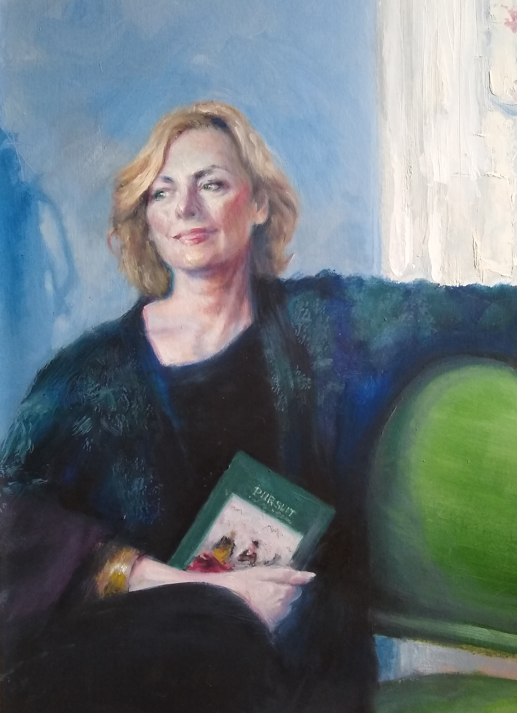

Edinburgh · Scotland
A small publishing house specialising in the collaboration of poetry and art.
We are very sorry indeed to report that Lucina Prestige, the founder and mainstay of Renaissance Press, has died at the age of eighty. The Press was very much her invention, bringing together her skills and experience in senior roles in publishing and her friendships in the arts in Scotland — particularly with the poets George Bruce (her neighbour) and Alan Spence, and the artist Dame Elizabeth Blackadder.
It was indeed the friendship between Bruce and Blackadder that gave rise to the first of the books, Through the Letterbox (2003). Bruce had taken to writing haiku, but it was Lucina who saw the potential of them and rescued them from the poet’s wastepaper bin. And it was she who recognised that Elizabeth Blackadder, with her fascination for all things Japanese, was the perfect artist to illustrate the words. The combination was ideal and, managed by Lucina, worked remarkably well, as three reprints and many thousands of sales testify. Moreover, Lucina negotiated the production of prints by Elizabeth as they became collaborators and great friends.
Friendship has also been key to the subsequent collaboration with Alan Spence (another poet with strong Japanese interests). Morning Glory (2010) and Thirteen ways of looking at Tulips (2022) testify to that, as also to Lucina’s taste, editorial skill, and production values.
It has been a privilege for all of us to have worked with her and known her as a remarkable friend.

In 1857, William Kidston writes home
A Glasgow businessman’s letters from an 1856 expedition to Egypt and the Holy Land.
Alan Spence & Elizabeth Blackadder
A beautiful sequence of tulip haiku, exquisitely illustrated.
George Bruce & Elizabeth Blackadder
The book through which Renaissance Press was born.
All books → · Prints → · Folios → · Artists & authors →
It was Elizabeth Blackadder and George Bruce’s happy collaboration that resulted in Through the Letterbox; and it was through this book that Renaissance Press was born. Read more about Elizabeth Blackadder →
We are a small publishing house based in Scotland and will be happy to answer any questions you may have whilst browsing. You can find our contact details here.